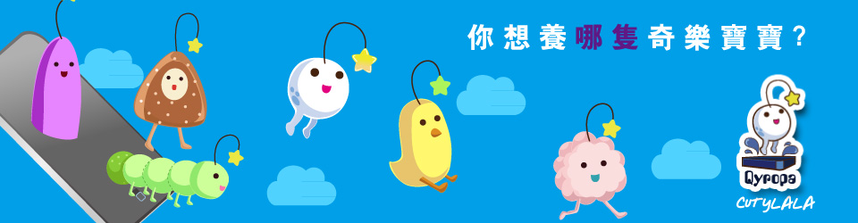

Top
Qyropa奇樂寶寶
menu
遊戲介紹
寶寶介紹
遊玩說明
飼養問題
線上特典
關閉視窗

go
小雞種
毛毛蟲種
常見的飼養問題
關於「奇樂寶寶」
Q: 什麼是奇樂寶寶？
A :
奇樂寶寶是一種外星生物，因喜愛手機、平板的溫熱環境，便寄生之中。由於叫聲Qyroqropa，加上其幼兒型態的圓滾外型很可愛，故稱之奇樂寶寶。
Q: 奇樂寶寶要怎麼養？牠吃什麼？
A :
如果您願意認養奇樂寶寶，可連絡管家洽詢認養事宜，認養機構裡的奇樂寶寶溫馴可愛，歡迎玩家前去認養！奇樂寶寶的營養來源於手機的電能，吃東西只是一種學習的行為。
Q: 認養機構裡的奇樂寶寶都好普通喔！沒有其他特別的嗎？
A :
認養機構裡的由於脾氣溫和，容易訓養，才會放在機構讓人認養，如果您偏愛特殊種類的，跟管家說聲，就能去森林抓特殊種的奇樂寶飼養，不過野生的奇樂寶不好養喔！
Q: 要怎麼教育奇樂寶寶？
A :
只要餵食牠便能學習該物品、食物的特性，如果把朋友的奇樂寶吃掉，就會看到朋友的手機通訊錄喔！還在等什麼！快去吃掉朋友的奇樂寶寶吧！
Q: 奇樂寶寶到底幾歲啊？
A :
有上過自然課吧？離我們近的那幾顆行星都無生命現象，也就是說寶寶原生地在離我們超過一光年的地方，那很有可能是兩百光年甚至更長的時間，這樣說來寶寶的歲數都比您大了耶？不過別害怕，寶寶至出生就被送進膠囊傳送來這，所以可以以寶寶開封後開始算的年紀～
關於「遊玩問題」
Q: 我的奇樂寶寶被吃掉了?怎麼辦?
A :
別緊張，奇樂寶寶的生命來源（以人類來說是心臟），是頭上那顆垂掉星星，那是無法被消化的，再等幾天寶寶就會長回來囉！不過會是從幼兒型態開始長，所以訓練寶寶的自我保護能力很重要的喔！
Q: 這隻奇樂寶寶我沒有愛了，想養其他隻，可以嗎？
A :
為避免寶寶黑化，強烈建議別隨意棄養喔！這不是一般的電子產品，而是真的外星人寄居其中，你拋棄牠，牠可能會轉化為病毒攻擊你喔！現在您還想遺棄牠嗎？
Q: 我的寶寶長得跟我越來越像了，這正常嗎？
A :
代表您很喜歡自拍，又常常更換大頭照，寶寶才會越來越像主人！
Q: 奇樂寶寶都不跟我玩怎麼辦？
A :
那就是您不夠用心，沒觀察出寶寶的喜好！每隻寶寶個性和嗜好都不同，需要您細心觀察留意！即使是同品種，性格上還是有些微差異喔！
Q: 奇樂寶寶不穿衣服可以嗎？
A :
基本上衣服對牠們來說只是裝飾用的，不過衣服買來不一定要穿啊～也可以餵給奇樂寶寶吃喔！
Q: 我的奇樂寶寶會大便欸？
A :
這是正常現象喔！奇樂寶寶也會大便尿尿，記得清理乾淨（免得寶寶把排泄物吞下肚^^"）
關於「購物儲值」
Q: 裏頭的價錢單位到底是?
A :
稱為Ｑ幣喔！裏頭一切只能用Ｑ幣購買！跟寶寶玩，多去冒險就能賺到Ｑ幣喔！
Q: 我不想花時間賺Ｑ幣，能用現實的錢幣購買嗎？
A :
奇樂寶寶也是生命體，需要用愛與關懷照顧，並非金錢就能拉近關係！我們鼓勵每位爹娘都花時間照顧奇樂寶寶，與寶寶建立良好關係！
Q: 為什麼現實的錢只能買食物啦？
A :
請參考上列。
Q: 我的Ｑ幣被偷走了，可以索賠嗎？
A :
請打電話聯絡管理員，他們會請警察處理。
Q: Ｑ幣可以用來幹嘛？
A :
可以換不錯的東西給寶寶，寶寶會很高興喔！
聯絡我們
如果沒有您要的答案，煩請填寫以下聯絡表單。
御飯糰種
聯繫我們
詢問類別
主題
請詢問項目
無法加入或刪除好友
無法儲值、購物
無法餵食、跟寶寶玩
無法刪除帳號
帳號被盜用
其他
一般資訊
真實姓名
寶寶編號
飼主代碼
E-mail
連絡電話
具體描述